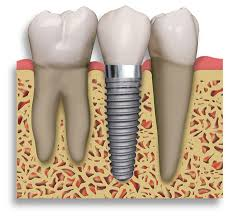

The concept of teeth replacement dates back in China at around 4000 years ago,where they used bamboo as implants. Dental implants in India as well have paved way for better orthodontic techniques. Dental implants (scientific name Endosseous implant/ fixture) are surgical components that support a dental prosthesis viz crown, bridge, denture, facial prosthesis by interfacing with bone of jaw or skull, also acting as orthodontic anchor. These implants connect with components such as an abutment that serves as a connection to the dental prosthesis.
A biologic process called osseointegration causes the dental implant to fuse with the bone. Before the discovery of the process, several non-titanium implants were placed in the jawbones but they caused complications due to foreign body reactions. But with medical advancement, material such as titanium or certain ceramics were used to form the bone integration.
The osseointegrated dental implants ensure healthy bone and gingiva. Sometimes, pre-prosthetic procedures are needed to recreate ideal bone and gingiva for implant placement, particularly after atrophy from previous tooth removal. Healthy tissues also ensure a well integrated implant with appropriate biomechanical loads and mean long term success rates of 93 to 98 per cent for the fixture with 10 to 15 year lifespan of the prosthetic teeth. Dental implants help retain artificial teeth, facial prosthetics and also act as anchor points for orthodontics.
A dental implant also supports replacement of missing teeth. The osseointegration process support physical loads for decades. For individual tooth replacement, an implant abutment is secured to the implant with an abutment screw, and a crown (dental prosthesis) is then connected to the abutment with dental cement, a small screw, or fused with the abutment as one piece during fabrication. Dental implants can retain a multiple tooth dental prosthesis either in the form of a fixed bridge or removable dentures.
An implant-supported dental bridge/denture is a multiple tooth dental prostheses. These bridges connect to more than one implant and may also connect to teeth as anchor points. Implant supported bridges attach to abutments just like a single tooth implant replacement. A fixed bridge replacement may vary from two teeth (fixed partial denture) to an entire arch of teeth (fixed full denture). The prosthesis is said to be fixed in both cases because it cannot be removed by the denture wearer.